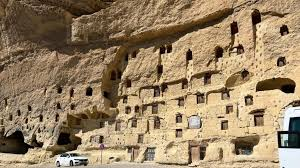

Karaman Hakkında
Karaman, İç Anadolu Bölgesi'nde yer alan, zengin tarihi ve kültürel mirasıyla öne çıkan bir şehrimizdir. Anadolu'nun Türkleşmesi ve İslamlaşmasında önemli rol oynayan Karamanoğlu Beyliği'ne başkentlik yapmıştır.
- Karamanoğlu Mehmet Bey (13 Mayıs 1277)
Karaman'ın Öne Çıkan Özellikleri
Karaman Hakkında
Şehir Klasik dönemlerde LARENDE olarak bilinir. 1256'da Karamanoğulları devletinin başkenti olan Larende, Cumhuriyetin ilanından sonra Konya iline bağlı olarak KARAMAN adını almıştır. Karamanoğlu Mehmetbey Konya civarında Moğollarla yaptığı savaşı kazanarak Konya'yı moğol işgalinden kurtarmış ve Karamanoğlu Devletinin başkenti yapmıştır..
Türkçenin Başkenti
O tarihlerde Anadolu Selçuklularının resmi dili Arapça, edebiyat dili Farsça idi. Yönetenlerle yönetilenler arasında dil konusunda büyük farklılıklar meydana gelmişti. Türk kültürünün yok edildiğini görerek Karamanoğlu Mehmet Bey 13 Mayıs 1277 yılında yayınladığı fermanla "Bu günden sonra hiç kimse sarayda, divanda, meclislerde ve seyranda Türk dilinden başka dil kullanmaya" diyerek Türkçe'den başka konuşulan ve yazılan dilleri yasaklamıştır.
Tarihi Miras
Karaman Kalesi, Ermenek Kalesi, Mennan Kalesi, Divle Kalesi, Görmel Köprüsü, Karaman Köprüsü, Selavat Köprüsü, Ak Köprü, İkiz İn Hitit Kabartması, Karadağ Sidemara Lahdi. gibi pek çok tarihi esere ev sahipliği yapar.
Kültürel Zenginlik
Türkçe'nin resmi dil olarak ilan edildiği yer olması nedeniyle dil bayramı her yıl 13 Mayıs'ta kutlanır.
Manazan ve Tahıl ambarı
Yeşildere Vadisi kenarındaki kireçtaşı falezlerine oyulmuş, 5 katlı, Bizans dönemine tarihlenen bir mağara yerleşimi
Buralar hem kilise hem tahıl ambarı hem de yaşam alanı olarak kullanılmış; özellikle kaya üzerindeki çok katlı oyma yapılar fotoğraflarda dikkat çekiyor.
Binbir Kilise

Bizans dönemine ait yaklaşık 50 kilise kalıntısından oluşan bu alan, Karadağ’ın kuzey yamaçlarında yer alıyor
Yapıların çoğu taş kubbeli bazilika planında ve zengin mimari detaylar içeriyor .Hatuniye Medresesi

Karamanoğulları döneminde, 1381–82 yıllarında Nefise Sultan tarafından yaptırılmış
Taş kesme malzemeyle yapılmış, açık avlulu, iki eyvanlı ve revaklı klasik bir medresedir; günümüzde Karaman Müzesi içinde sergi ve etkinlik alanı olarak kullanılıyorİlçeleri
- Merkez
- Ayrancı
- Başyayla
- Ermenek
- Kazımkarabekir
- Sarıveliler